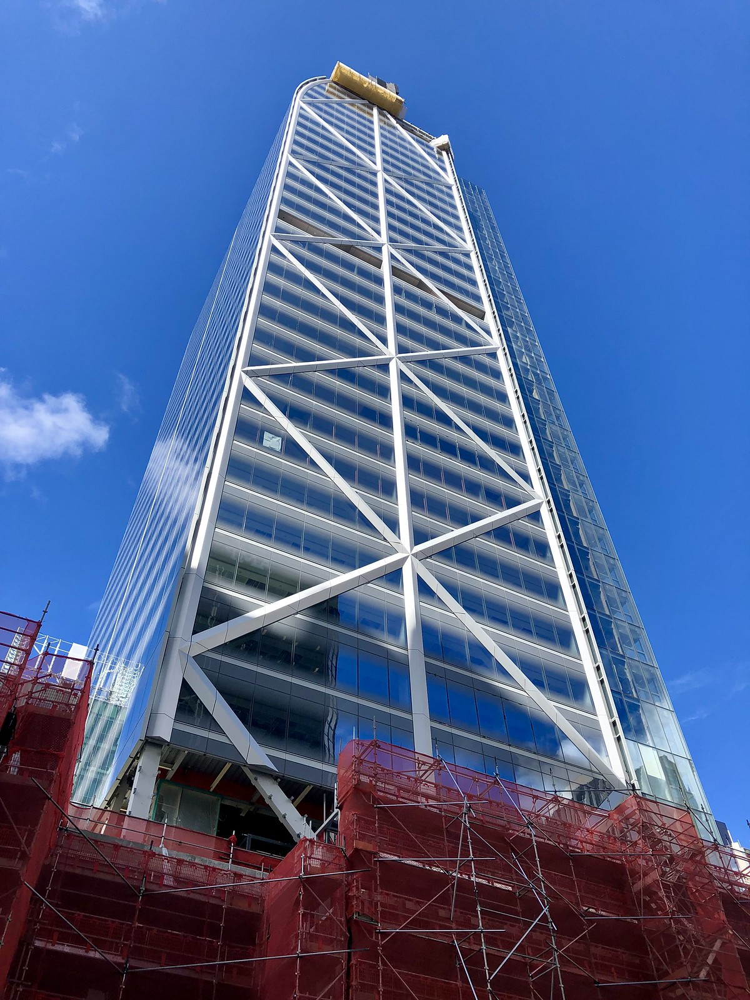

Scale
8,500T Commercial Bay structural steel packageRefined Industrial Modernism
Do it Once. Do it Right.
CH Steel brings Culham Engineering and The Herrick Corporation together in one delivery system across planning, detailing, fabrication, logistics, and erection. We convert structural complexity into clear programme control, disciplined execution, and dependable project outcomes.
Structured delivery
International capability
Single-point accountability
Proof At Scale
Commercial Bay
The first proof point is not marketing language. It is performance under pressure: tonnage, sequencing, logistics, and control in complex urban conditions.
Capability
39 Storeys High-rise delivery in constrained CBD conditionsSignificance
NZ First Height and complexity milestone in the local marketCommercial Bay demonstrates CH Steel's integrated operating model in one of New Zealand's most constrained urban environments. The project delivered approximately 8,500T of structural steel for a 39-storey commercial tower and retail complex in the heart of Auckland CBD, including an entirely welded braced perimeter frame with steel lift cores, with erection sequencing that advanced ahead of concrete floor plates to improve programme efficiency.
Constructability-led planning
Constrained urban logistics
Programme certainty
Quality and safety control
 More Project Stories
More Project Stories




Values And Sustainability
Responsible Performance, Embedded In The System.
Long-term value is engineered into delivery through compliance, documentation, ethical sourcing, and lower-impact fabrication pathways. Responsibility is treated as a control discipline, not a separate message.
Priority discipline across environmental, ethical, and future performance.
Environmental
- Carbon reduction
- Circular economy practices
- Environmental Product Declarations
- Water and waste management
Social And Ethical
- Ensuring ethical sourcing
- Compliance with all applicable legislation, particularly those relating to modern slavery and fair labour standards
- Supporting local communities
- Employment and training pathways
Innovation Goals
- Energy-efficient fabrication
- Waste minimisation
- Sustainable construction practices
- Local sourcing and industry collaboration
Systems And Control
Disciplined Systems That Keep Projects On Line.
CH Steel operates like a precision-built structure: each discipline is defined, interfaces are controlled, and information flows forward with intent.
Planning
Buildability First
Early contractor input converts design ambition into delivery logic before programme risk compounds.
Control
Interface Discipline
Detailing, fabrication, logistics, and erection are coordinated as connected phases, not isolated tasks.
Assurance
Quality And Safety
Execution standards, documentation, and site controls are built into the workflow at every handover.
Structural Steel
Primary frame packages, seismic-ready detailing, and constructability-led delivery.
Mechanical
Integrated coordination for mechanical systems and associated steel interfaces.
Infrastructure
Large-scale, high-reliability steel delivery for transport and civil programmes.
Project Experience
High-profile delivery across commercial towers, civic assets, transport, and major programme work.
Culham + Herrick
One Partnership. Structured For Scale.
CH Steel is jointly owned by Culham Engineering and The Herrick Corporation with equal shareholding. The model combines local execution depth with international steel expertise to deliver clarity, capacity, and resilience across complex programmes.
Contact
Bring Structural Certainty In Early.
Engage CH Steel before delivery pressure hardens. Early alignment on scope, sequencing, and interfaces creates the conditions for controlled execution later.